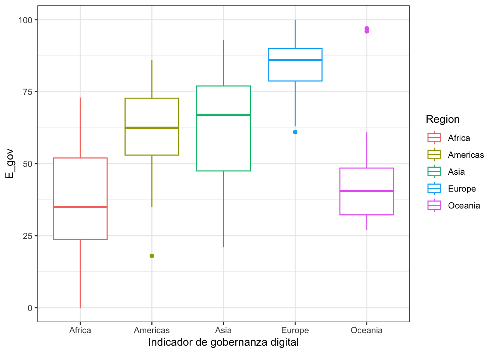
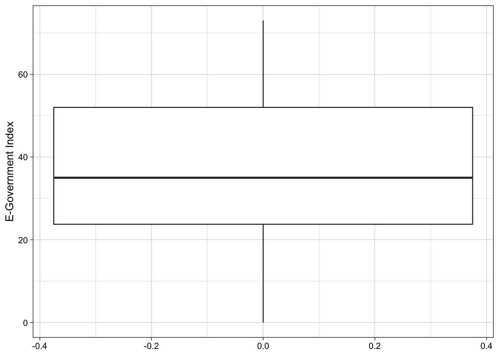
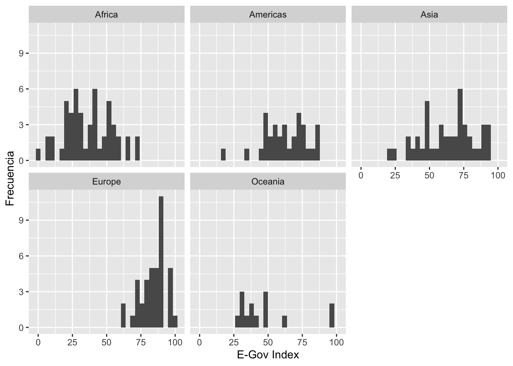

Práctica dirigida 3

FACULTAD DE CIENCIAS SOCIALES - PUCP
Curso: POL 278 - Estadística para el análisis político 1 | Semestre
2023 - 2
E-Government Survey 2022: The Future of Digital Government
La Encuesta de las Naciones Unidas sobre Gobierno Electrónico se ha publicado cada dos años por el Departamento de Asuntos Económicos y Sociales de las Naciones Unidas desde 2001. La Encuesta evalúa el estado de desarrollo del gobierno electrónico de todos los Estados miembros de las Naciones Unidas y, durante este tiempo, ha establecido un conjunto de datos y análisis exhaustivos.
La evaluación mide el rendimiento del gobierno electrónico de los países en relación con los demás, en lugar de ser una medición absoluta. Reconoce que cada país debe decidir el nivel y la extensión de sus iniciativas de gobierno electrónico de acuerdo con sus propias prioridades nacionales de desarrollo y para lograr los Objetivos de Desarrollo Sostenible. La Encuesta sirve como una herramienta de referencia y desarrollo para que los países aprendan entre sí, identifiquen áreas de fortaleza y desafíos en el gobierno electrónico y moldeen sus políticas y estrategias. También tiene como objetivo facilitar e informar las discusiones de los órganos intergubernamentales, incluida la Asamblea General de las Naciones Unidas, el Consejo Económico y Social y el Foro Político de Alto Nivel.

Carguemos la data egov2022.xlsx
library(tidyverse)#Convocamos el paquete
library(rio)
data=import("egov2022.xlsx") - “Country Name” : Nombre del país
- “E-Government Index” : Puntaje final de la encuesta
- “E-Participation Index” :
- “Online Service Index” :
- “Human Capital Index” :
- “Telecommunication Infrastructure Index” :
- “region” : Continente donde pertenece cada país
1.Recordando el análisis descriptivo
- Moda: Nominales, ordinales y numéricas
- Mediana: Ordinales y numéricas
- Media: Numéricas
Vemos las variables üßê
names(data)## [1] "Country Name"
## [2] "E-Government Index"
## [3] "E-Participation Index"
## [4] "Online Service Index"
## [5] "Human Capital Index"
## [6] "Telecommunication Infrastructure Index"
## [7] "region"Revisamos la estructura de la bd
str(data)## 'data.frame': 181 obs. of 7 variables:
## $ Country Name : chr "Afghanistan" "Albania" "Algeria" "Andorra" ...
## $ E-Government Index : num 21 74 54 71 33 59 83 73 96 90 ...
## $ E-Participation Index : num 19 76 23 38 17 42 65 58 99 77 ...
## $ Online Service Index : num 28 82 37 51 47 42 81 72 94 88 ...
## $ Human Capital Index : num 35 80 70 76 46 81 92 79 100 91 ...
## $ Telecommunication Infrastructure Index: num 19 60 61 88 20 60 73 69 88 85 ...
## $ region : chr "Asia" "Europe" "Africa" "Europe" ...Podemos ver que casi todas las variables son numéricas, excepto la variable region que se muestra como texto, pero es categórica. Procedemos a revisar sus niveles y a categorizarla.
data %>%
group_by(region) %>%
summarize(Freq=n())## # A tibble: 5 × 2
## region Freq
## <chr> <int>
## 1 Africa 52
## 2 Americas 32
## 3 Asia 43
## 4 Europe 40
## 5 Oceania 14data$region=as.factor(data$region)
str(data) #comprobamos## 'data.frame': 181 obs. of 7 variables:
## $ Country Name : chr "Afghanistan" "Albania" "Algeria" "Andorra" ...
## $ E-Government Index : num 21 74 54 71 33 59 83 73 96 90 ...
## $ E-Participation Index : num 19 76 23 38 17 42 65 58 99 77 ...
## $ Online Service Index : num 28 82 37 51 47 42 81 72 94 88 ...
## $ Human Capital Index : num 35 80 70 76 46 81 92 79 100 91 ...
## $ Telecommunication Infrastructure Index: num 19 60 61 88 20 60 73 69 88 85 ...
## $ region : Factor w/ 5 levels "Africa","Americas",..: 3 4 1 4 1 2 2 3 5 4 ...2. Análisis del E-Gov Index
Revisamos solo la media del E-Egov Index
data |>
summarise(mean(`E-Government Index`))## mean(`E-Government Index`)
## 1 58.79558data |>
summarise(Mínimo=min(`E-Government Index`),
Mediana= median(`E-Government Index`),
Desviación=sd(`E-Government Index`),
Media= mean(`E-Government Index`),
Máximo= max(`E-Government Index`))## Mínimo Mediana Desviación Media Máximo
## 1 0 59 23.98373 58.79558 100library(ggplot2)
data |>
ggplot(aes(x=`E-Government Index`))+
geom_histogram(fill = "blue",
color = "black",
bins = 30,
alpha = 0.7)+
xlab("E-Government Index") +
ylab("Frecuencia")+
theme_minimal()data |>
ggplot(aes(x=`E-Government Index`))+
geom_histogram(fill = "blue",
color = "black",
bins = 30,
alpha = 0.7)+
geom_vline(xintercept = median(data$`E-Government Index`), color = "red")+
geom_vline(xintercept = mean(data$`E-Government Index`), color = "green")+
xlab("E-Government Index") +
ylab("Frecuencia")+
theme_light()
data |>
ggplot(aes(y=`E-Government Index`))+
geom_boxplot()+
ylab("E-Government Index")
Por regiones
¿Cuál es la importancia de analizar por regiones?
data |>
filter(region =="Africa") |>
summarise(mean(`E-Government Index`))## mean(`E-Government Index`)
## 1 36.28846data %>%
group_by(region) %>%
summarize(Media=mean(`E-Government Index`)) ## # A tibble: 5 × 2
## region Media
## <fct> <dbl>
## 1 Africa 36.3
## 2 Americas 62.6
## 3 Asia 63.2
## 4 Europe 84.2
## 5 Oceania 47.7paraGBarras=data %>%
group_by(region) %>%
summarize(Freq=n()) %>%
mutate(Porcentaje = (Freq / sum(Freq))*100)library(ggplot2)
paraGBarras |>
ggplot(aes(x=region, y=Porcentaje, fill=region)) +
geom_bar(stat = "identity") +
geom_text(aes(label=round(Porcentaje,1)), vjust=1.30, color="black", size=3)+
theme_minimal()
library(ggplot2)
library(dplyr)
data |>
ggplot(aes(x=`E-Government Index`))+
geom_histogram()+
facet_wrap(~region)+
xlab("E-Gov Index")+
ylab("Frecuencia")
ggplot(data, aes(x=region, y=`E-Government Index`, color=region)) +
geom_boxplot() +
geom_jitter(shape=16, position=position_jitter(0.2)) +#para agregar los casos como puntos
theme_classic()